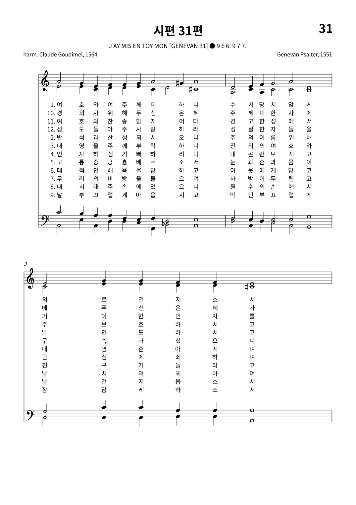
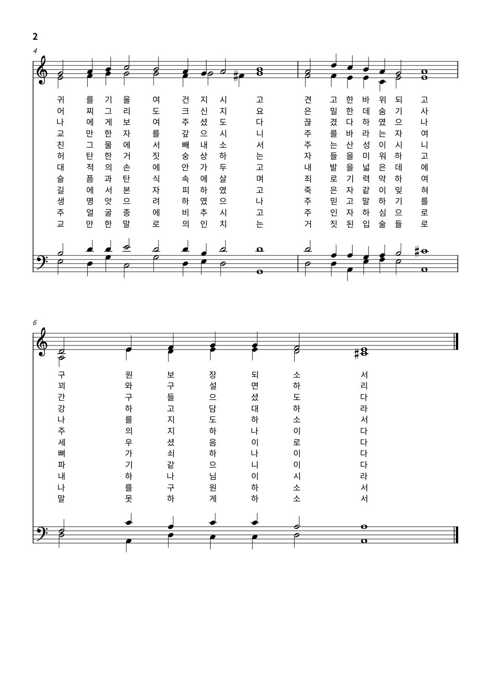

시편 31편
J’AY MIS EN TOY MON [GENEVAN 31] · 9 6 6. 9 7 7.
곡조: Genevan Psalter, 1551 · 화성: Claude Goudimel, 1564 · 가사: 개역한글판 시편 31편 편역(AI 초벌 편역판 · 신학 감수 전) · 12절
악보 PDF MusicXML(출력용) MusicXML(반주용, 전주·반복 포함) 개역한글 시편 31편 읽기
악보


가사
1절
여호와여 주께 피하니
수치 당치 않게
의로 건지소서
귀를 기울여 건지시고
견고한 바위 되고
구원 보장 되소서
여호와여 주께 피하니
수치 당치 않게
의로 건지소서
귀를 기울여 건지시고
견고한 바위 되고
구원 보장 되소서
2절
반석과 산성 되시오니
주의 이름 위해
날 인도하시고
친 그물에서 빼내소서
주는 산성이시니
나를 지도하소서
반석과 산성 되시오니
주의 이름 위해
날 인도하시고
친 그물에서 빼내소서
주는 산성이시니
나를 지도하소서
3절
내 영을 주께 부탁하니
진리의 여호와
구속하셨으니
허탄한 거짓 숭상하는
자들을 미워하고
주 의지하나이다
내 영을 주께 부탁하니
진리의 여호와
구속하셨으니
허탄한 거짓 숭상하는
자들을 미워하고
주 의지하나이다
4절
인자하심 기뻐하리니
내 곤란 보시고
내 영혼 아시며
대적의 손에 안 가두고
내 발을 넓은 데에
세우셨음이로다
인자하심 기뻐하리니
내 곤란 보시고
내 영혼 아시며
대적의 손에 안 가두고
내 발을 넓은 데에
세우셨음이로다
5절
고통 중 긍휼 베푸소서
눈과 혼과 몸이
근심에 쇠하며
슬픔과 탄식 속에 살며
죄로 기력 약하여
뼈가 쇠하나이다
고통 중 긍휼 베푸소서
눈과 혼과 몸이
근심에 쇠하며
슬픔과 탄식 속에 살며
죄로 기력 약하여
뼈가 쇠하나이다
6절
대적 인해 욕을 당하고
이웃에게 당코
친구가 놀라고
길에서 본 자 피하였고
죽은 자 같이 잊혀
파기 같으니이다
대적 인해 욕을 당하고
이웃에게 당코
친구가 놀라고
길에서 본 자 피하였고
죽은 자 같이 잊혀
파기 같으니이다
7절
무리의 비방을 들으며
사방이 두렵고
날 치려 꾀하며
생명 앗으려 하였으나
주 믿고 말하기를
내 하나님이시라
무리의 비방을 들으며
사방이 두렵고
날 치려 꾀하며
생명 앗으려 하였으나
주 믿고 말하기를
내 하나님이시라
8절
내 시대 주 손에 있으니
원수의 손에서
날 건지옵소서
주 얼굴 종에 비추시고
주 인자하심으로
나를 구원하소서
내 시대 주 손에 있으니
원수의 손에서
날 건지옵소서
주 얼굴 종에 비추시고
주 인자하심으로
나를 구원하소서
9절
날 부끄럽게 마옵시고
악인 부끄럽게
잠잠케 하소서
교만한 말로 의인 치는
거짓된 입술들로
말 못하게 하소서
날 부끄럽게 마옵시고
악인 부끄럽게
잠잠케 하소서
교만한 말로 의인 치는
거짓된 입술들로
말 못하게 하소서
10절
경외자 위해 두신 은혜
주께 피한 자에
베푸신 은혜가
어찌 그리도 크신지요
은밀한 데 숨기사
꾀와 구설 면하리
경외자 위해 두신 은혜
주께 피한 자에
베푸신 은혜가
어찌 그리도 크신지요
은밀한 데 숨기사
꾀와 구설 면하리
11절
여호와 찬송할지어다
견고한 성에서
기이한 인자를
나에게 보여 주셨도다
끊겼다 하였으나
간구 들으셨도다
여호와 찬송할지어다
견고한 성에서
기이한 인자를
나에게 보여 주셨도다
끊겼다 하였으나
간구 들으셨도다
12절
성도들아 주 사랑하라
성실한 자들을
주 보호하시고
교만한 자를 갚으시니
주를 바라는 자여
강하고 담대하라
성도들아 주 사랑하라
성실한 자들을
주 보호하시고
교만한 자를 갚으시니
주를 바라는 자여
강하고 담대하라